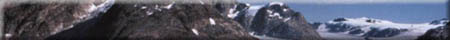

|
|  |
| Early settlers noticed that in moving from the south western corner of the Province to the north eastern edge of the agricultural zone, the colour of the surface soil changed from brown to dark brown, then to black, dark gray and finally light gray. In the same direction the vegetation changed from short grass prairie, to tall grass prairie through mixed aspen parkland and finally to boreal forest.These changes represent a cooler, wetter climate in northern compared to southern parts of the Province - a response to greater "moisture effectiveness". A soil's colour can tell us something about its characteristics, particularly how much organic matter it contains. The darker the colour, the more organic matter is present in the A horizon. Areas of predominately one soil colour are called soil zones. The zones are formed as a result of the interaction of the soil forming factors of climate and vegetation. | |||

The Soil Zones of Saskatchewan form wide bands of similarly coloured surface soils in a direction roughly north west ot south east. Since most Saskatchewan soils are formed on similar parent materials, the dominant soil forming factors are climate and vegetation on a regional scale. Locally topography or parent material variations may dominate. By understanding the different types of soils of the Province, agricultural managers may choose the best techniques for soil conservation and crop production such as summerfallowing, fertilization, rotations, conservation tillage and straw management. | |||

The Brown soil zone is found in the south central area of the Province where the climate is warm and dry. Lack of moisture has usually been the main limiting factor to crop production. The vegetation in this zone comprises short prairie grasses and the surface A horizon (topsoil) usually has less organic matter (about 2%) and is thinner (about 12 cm) than similar horizons in other zones. Over three quarters of the soils in this zone are of medium texture (loam) formed on flat to hilly topography. High average wind speed is a concern in soil erosion, so that great care is needed in tilling these soils. Soil salinity continues to spread as through the zone - generally a result of poor farming practice. The brown soil zone has lower than average provincial yields and higher chances of crop failures.
| |||
Dark Brown soils were formed in the central agricultural region with a more productive prairie grass cover yielding A horizons of about 17cm thick and an organic matter content of 4 to 6 %. As in the Brown zone, most soils are of loam texture, but are formed on a generally flat topography. Wind erosion is less of a problem, because of lower wind speeds and moister conditions than in the Brown zone.Farmers have a more varied choice of crop rotations, but soil salinity must be watched carefully.
| |||

The Black and Dark Gray soil zones roughly corresponds to the humid continental climate zone and the aspen parkland vegetation zone. The tall grass and parkland prairie (aspen trees) are much more favourable to good crop production due to slightly cooler temperatures and more effective moisture levels. The abundance of vegetation, decomposing after it dies, adds more organic matter to the soil. The cycle continues, and more rich black soil is formed. This extra organic matter in black soils gives them their dark colour. The soils are formed on flat to slightly rolling landscapes. A horizons in this zone are usually 20 to 25 cm deep and contain 7% organic matter. Wind erosion and salinity are much less of a problem than in Brown and Dark Brown soils.
| |||
The Gray zone occurs further north, where the climate is cooler and wetter. The cooler temperatures result in an increase in soil moisture. These higher More moisture penetrates the soil profile and leaches minerals and nutrients out of the upper layers. As a result, gray topsoils tend to be shallow and less fertile than black soils. The A horizons of native soils usually have a layer of organic matter 5-6cm deep that sits above a leached or eluviated gray-coloured horizon (Ae). In many cases much of the original organic matter was lost from these soils when they were brought under cultivation or "broken". Trees and leaf litter were often scraped off by bulldozers and burned leaving a landscape that could be easily be eroded by water and wind. Surface horizons in this zone are low in organic matter (often less than 2%) and are deficient in major plant nutrients such as nitrogen phosphorus and sulphur. Soil acidity is a problem in some areas. Parent materials in this zone are varied and extensive areas of organic soils can be found. A major problem for farmers is wet land in the spring time and early frosts. | |||
Forest soils lie north of the agriculture boundary (approximately the 56 degree parallel). The transition zone comprises parkland and tall grass prairie and rapidly changes to boreal forest as one moves north. Further north, much of the land is covered by the rock of the Canadian Shield with only a thin layer of soil to supports vegetation such as mosses, lichens and shrubs as well as trees such as jack pine and black spruce.
|